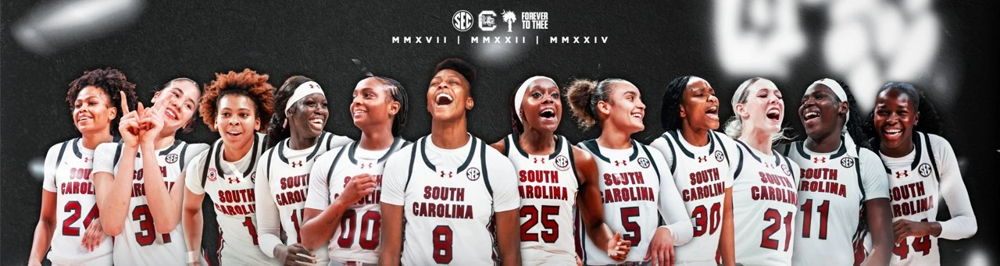
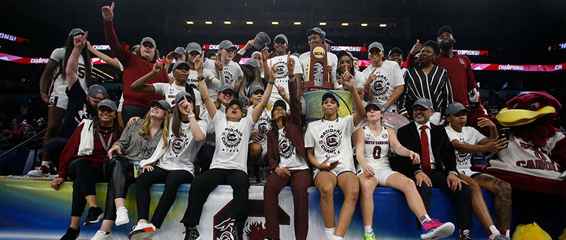

The University of South Carolina women’s basketball team is one of the most successful programs in college basketball. The Gamecocks are led by head coach Dawn Staley, who has helped turn the program into a national powerhouse since becoming head coach in 2008. Under Staley, South Carolina has won three NCAA National Championships in 2017, 2022, and 2024. The team is also known for its strong defense, talented players, and passionate fan base that creates an exciting atmosphere at Colonial Life Arena.
UofSC Women's Basketball Official WebsiteSouth Carolina has also produced many talented players who have continued their basketball careers professionally. The program has had numerous players selected in the WNBA Draft, including several first-round selections. Beyond winning championships, the Gamecocks have helped bring more attention and excitement to women’s college basketball. Their continued success under Dawn Staley has made South Carolina a major part of the growth of women’s basketball both at the university and across the country.

| Year | Opponent |
|---|---|
| 2017 | Mississippi State |
| 2022 | UConn |
| 2024 | Iowa |
Go follow the USC Women's Basketball Instagram page!